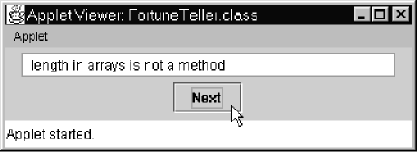

The applet in Figure 12-1 is a "fortune teller." When the user
presses the "Next" button, the applet displays a message randomly
chosen from an array of messages. The applet is implemented in one class, FortuneTeller.

Figure 12-1. The Fortune Teller applet
Set up a project with the FortuneTeller.java and TestFortune.html files from JM\Ch12\Fortunes. (TestFortune.html describes a web page that holds the applet.) Fill in the blanks in the applet's code, adding an array of a few "fortunes" (strings) and the code to randomly choose and display one of them. Recall that the static Math.random method returns a random double value x such that 0 ? x < 1. We have used it in earlier programs (for example, JM\Ch07\Craps\Die.java). Scale the value returned by Math.random appropriately to obtain a random value for an index within the range of your array. Use display's setText method to show the chosen message.